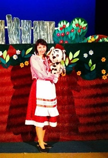

Афиша Саранск

- Концерты
- Спорт
- Театр
- Детям
- Купить билет
АЛЕНКИНЫ СКАЗКИ
3 апреля 11:00
ТЕАТР КУКОЛ РЕСПУБЛИКИ МОРДОВИЯ - ЗРИТЕЛЬНЫЙ ЗАЛ
г. Саранск, ул. Володарского, 90А
Стоимость билетов: 150
Спектакль состоит из двух частей, которые называются: «Гусёнок» и «Полянка».
Первая — забавная и поучительная история о маленьком непослушном гусёнке Дорофее, которого пасла Девочка на полянке возле леса, да прилегла отдохнуть, а в это время подкралась хитрая Лиса и утащила гусёнка.
И вот здесь в нашей истории появляется Ёжик. Благодаря его смелости и находчивости гусёнок Дорофей был спасён. А Лиса убежала подальше в лес!
Вторая история о Девочке, которая шла к своей бабушке через полянку и несла узелок. Здесь её и застал дождик. Девочка положила узелок на маленький грибочек, сама прилегла под кустик и заснула... А тем временем дождик прошёл, выглянуло солнышко и Девочка проснулась... А узелка-то и нет! Вместо маленького грибочка — огромный Гриб!
Лисичка видела, как грибочек вырос и что узелок остался на его шляпке, и сказала об этом Девочке. Та очень рассердилась и, поругав Гриб, потребовала свой узелок. А Гриб-то не отдаёт его! И только тогда, когда Девочка сказала «пожалуйста», Гриб с удовольствием вернул ей узелок!
МАПА
4 АПРЕЛЯ 11:00
ТЕАТР КУКОЛ РЕСПУБЛИКИ МОРДОВИЯ - ЗРИТЕЛЬНЫЙ ЗАЛ
г. Саранск, ул. Володарского, 90А
Пролетарская ул., 39, Саранск, Респ. Мордовия, 430000
Стоимость билетов: 150
Девочке подарили Щенка, которого она поселила в новом домике — собачьей будке — во дворе. Только вот никак она не могла подобрать ему имени!
А тем временем Щенок, гуляя по двору, познакомился с Котенком и хотел с ним подружиться. Однако, кошки не водятся с собаками...
Из соседнего двора пришла Курица и, увидев новый домик Щенка, решила вывести там цыплят: так было в нём уютно, тепло и сухо. Щенку это не понравилось. Но, когда Курица ушла лечить Петушка, у которого разболелось горлышко, цыплята вылупились из яиц сами и первым, кого они увидели, был Щенок! Цыплята оказались такими маленькими и беззащитными, что добрый Щенок почувствовал ответственность за них: он стал играть с ними и следить, чтобы ничего не случилось, и даже кормить их.
Цыплята решили, что Щенок — это и есть их мама и папа. И стали называть его "Мапа". Вот так и получилось забавное и чудесное имя для Щенка — МАПА!

Сейчас в кино
test